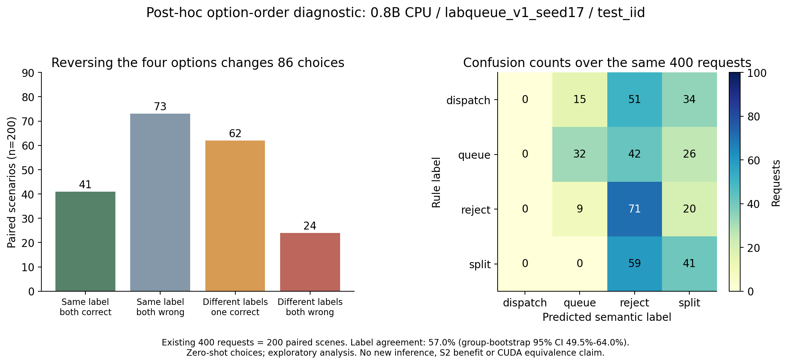

范围：labqueue_v1_seed17 / test_iid，已有 400 条预测、200 个场景。每个场景保留相同状态、规则和语义标签，仅反转四个选项顺序。没有新增推理或独立测试样本。
同一语义选择保持不变：114/200（57.0%，场景组 bootstrap 95% CI [49.5%, 64.0%]）；改变选择：86/200。两次都正确 41；两次同选但都错误 73；选择改变且一次正确 62；选择改变且都错误 24。
400 次请求中选择 dispatch 共 0 次，精确标签中为 dispatch 的有 100 次。这是该条件与该执行设置的观察结果；不能单独归因于位置偏好、证明适配器错误，或外推所有场景。需结合官方套件及未来成对 CUDA 检查继续定位。
语义概率的成对总变差距离均值 0.2815。较低的校准 ECE 不会自动消除选择不稳定，也没有证明 S2 能修复这些错误。
传统监督模型的成对选择一致率：tfidf-nb 100.0%，tfidf-lr 100.0%，tfidf-svm 100.0%，structured-lr 100.0%，random-forest 100.0%，gradient-boosting 100.0%。它们的特征只使用 state，按构造忽略选项顺序；这一结果不能作为相同输入处理或相同训练预算下的模型优越性证据。
本分析是在看到 IID 结果后补做的探索性诊断，未进行多重比较校正，不用于拟合温度、选择阈值或改动固定协议。所有 12 个 CPU 条件以及原定 4B GPU E1–E4、公开任务 LLM、真实 GPU/API 交接与最终报告仍为必需项。

完整逐场景证据：results/cpu_option_order_20261102/labqueue_v1_seed17/test_iid/paired_scenarios.jsonl；来源绑定与计数：results/cpu_option_order_20261102/labqueue_v1_seed17/test_iid/summary.json。